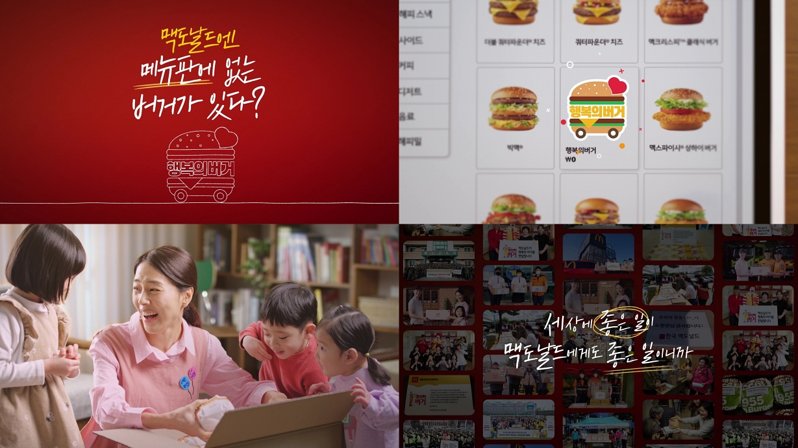
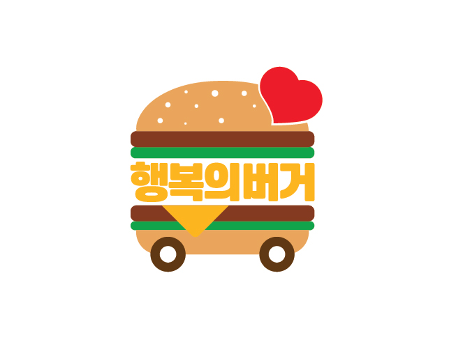

‘맥도날드엔 메뉴판에 없는 버거가 있다?’
맥도날드, ‘행복의 버거’ 캠페인 주제로 한 디지털 영상 공개…
올해도 ESG 영상 시리즈 이어간다
- ‘행복의 버거’ 캠페인, 우리 주변의 이웃에게 든든한 한 끼 제공하는 맥도날드의 대표적인 사회공헌활동
- 영상 통해 새로운 ‘행복의 버거’ 로고 공개...캠페인 취지와 목적 표현
- 지난해 선보인 ‘ESG 영상 시리즈’ 일환으로 제작…45초 가량의 짧은 길이에 감각적인 편집으로 눈길
(2024년 4월 2일) ---- 맥도날드가 대표 사회공헌활동 ‘행복의 버거’ 캠페인을 주제로 한 디지털 영상을 공개한다.
행복의 버거 캠페인은 주변의 도움이 필요한 이웃과 지역사회를 위해 애쓰는 구성원에게 든든한 한 끼를 제공하는 맥도날드의 대표적인 사회공헌활동 중 하나다. 2013년 처음 시작돼 올해로 12년째 진행 중이며, 현재까지 약 25만 개 이상의 맥도날드 메뉴를 지역사회에 전달해 왔다. 최근에는 신규 매장 오픈 시 근처 지역아동센터에 행복의 버거를 전달하는 활동을 펼쳐왔으며, 이러한 활동을 지속적으로 확대할 예정이다.
맥도날드의 이번 디지털 영상은 ‘맥도날드엔 메뉴판에 없는 버거가 있다?’라는 제목으로 행복의 버거 캠페인의 의미를 재치 있게 풀어냈다. 영상은 행복의 버거가 박스에 담겨 전달되는 모습과 이를 받고 즐거워하는 아동센터, 소방관, 의료진들의 모습들을 중점적으로 묘사했으며, 말미에는 실제 기념사진들을 삽입해 진정성을 더했다.
또한 맥도날드는 영상을 통해 행복의 버거 캠페인의 신규 로고도 공개했다. 신규 로고는 바퀴가 달린 버거의 모습에 ‘하트’ 문양으로 ‘웃음과 위로를 전달한다’는 행복의 버거 캠페인의 취지와 목적을 그대로 담아냈다.
해당 영상은 맥도날드가 지난해 선보인 ‘ESG 영상 시리즈’의 일환으로 제작됐다. 해당 영상들은 ‘세상에 좋은 일이 맥도날드에게도 좋은 일’이라는 주제로 맥도날드의 다양한 ESG 활동을 담아내며 눈길을 모은 바 있다. 행복의 버거 캠페인을 주제로 한 이번 영상 역시 약 45초 길이에 감각적인 편집이 더해져 완성됐다.
맥도날드 관계자는 “‘행복의 버거’를 통해 우리 주변의 이웃들에게 응원과 감사의 마음을 전하는 한편, 지역 사회에 선한 영향력을 전파하고자 노력하고 있다”며 “앞으로도 지속적으로 다양한 분들에게 행복의 버거를 통한 의미 있는 한 끼 식사를 제공하기 위해 힘쓸 것”이라고 밝혔다.
맥도날드의 이번 ESG 영상 시리즈 ‘행복의 버거’편은 맥도날드 공식 유튜브, 인스타그램 채널을 통해 확인 가능하다.
[참고자료 – 맥도날드 ESG 영상 시리즈]
2024 ‘맥도날드엔 메뉴판에 없는 버거가 있다?’편 링크
2023 ‘맥도날드 유니폼은 플라스틱으로 만든다?’편 링크
2023 ‘20대와 70대가 동료가 되는 회사?’편 링크

[보도사진1] 맥도날드가 대표 사회공헌활동 ‘행복의 버거’ 캠페인을 주제로 한 디지털 영상을 공개한다

[보도사진2] 맥도날드가 영상을 통해 공개한 ‘행복의 버거’ 캠페인의 신규 로고
[한국맥도날드]
한국맥도날드는 1988년 한국 진출 이래 현재까지 (Quick Service Restaurant, QSR) 업계 리더로 자리매김해오고 있다. 매년 대규모 채용을 진행하면서 한국 사회 고용 창출에 일조하고 있으며, ‘Taste of Korea(한국의 맛)’ 프로젝트를 통한 고품질의 국내산 식재료 수급으로 지역 농가와의 동반 성장 노력도 강화하고 있다. 최근에는 책임 있는 글로벌 기업으로서 ‘세상에 좋은 일이 맥도날드에게도 좋은 일(Better World, Better McDonald’s)’라는 슬로건 아래 지역사회와 환경에 기여하기 위한 새로운 비전과 실천 계획을 발표하는 등 지속 가능한 성장을 위해 노력하고 있다.